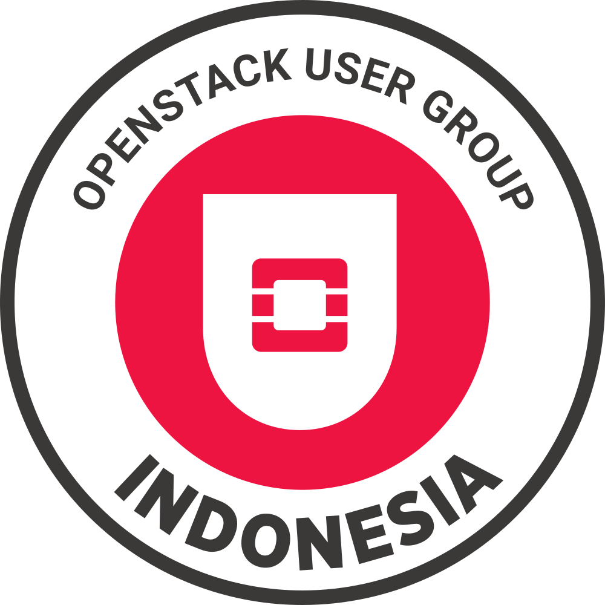

Host Communities
OpenStack Indonesia Community
OpenStack Indonesia (OS-ID) is an official OpenStack community (under Open Infrastructure Foundation) based in Indonesia. This community was established for all Indonesians who are interested in OpenStack projects/services.
In 2019, we held the first official community meetup in Jakarta and repeated monthly in several cities around Indonesia. First Indonesia Open Infrastructure Day was successfully held in November 2019 in Surabaya, and Last 2020 held the Open Infrastructure Day Indonesia event virtually.
Until now, the OpenStack Indonesia community has 975 members on the Facebook page and 900 members in the Telegram group, mostly from Indonesia..